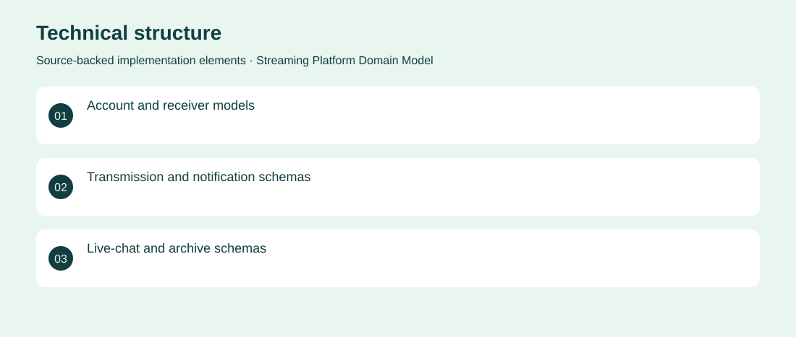

The project
An early collaborative streaming-platform architecture prototype preserved on development branches. It defines accounts, transmissions, notifications, chat and archive schemas. Frontend and service handlers remain scaffolds, so no working streaming product is claimed. Created an initial NestJS/Mongoose domain structure across developer branches.
The problem
A streaming service needs a shared model for viewers, senders, sessions and messages before real-time delivery can be implemented.
The solution
Created an initial NestJS/Mongoose domain structure across developer branches.
My contribution
Early architecture and data-modelling work represented in the repository; individual authorship and completed application delivery are not inferred.
Technical structure

The portfolio cover is an editorial illustration. No live product screenshot is presented for this project.
Showcase assets
{kind=link}
{kind=link}
{kind=link}
New portfolio identity. Newly designed marks are portfolio treatments, not claims of official client branding.